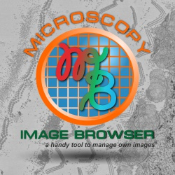

Microscopy Image Browser
|  | Microscopy Image Browser image segmentation and beyond Microscopy Image Browser is a GUI tool that is written under Matlab environment and can be used for segmentation of multidimentional datasets obtained by light or electron microscopy. |
API class reference can be accessed from the MIB->Menu->Help->Class reference
Also see the Microscopy Image Browser home page: <http://mib.helsinki.fi >
Developed during 2010-2018 by
Core developer:
Ilya Belevich
Developers:
Merja Joensuu, Darshan Kumar, Helena Vihinen and Eija Jokitalo
Electron Microscopy Unit
Institute of Biotechnology
PO Box 56 (Viikinkaari 9)
00014, University of Helsinki
Finland
Back to Index